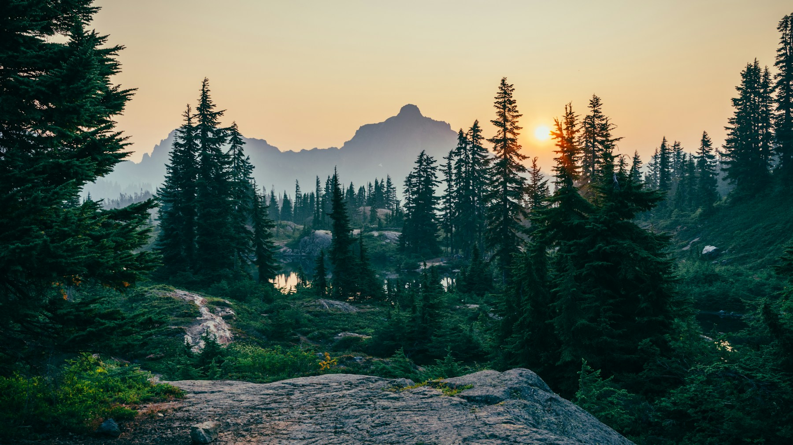

Quiet discovery
Stargazer Grove
A low-lit woodland clearing designed for night-sky viewing, slow walks and unhurried evenings.
Explore ↗Experiences & attractions
Climb, listen, wander, make and look closer. Every experience is part of the landscape rather than placed on top of it.

Park highlights

Quiet discovery
A low-lit woodland clearing designed for night-sky viewing, slow walks and unhurried evenings.
Explore ↗
Play for every age
An inclusive landscape of timber structures, soft landforms and imaginative routes through the trees.
Explore ↗Water in motion
A hands-on stream garden where children can follow water, test small dams and learn by doing.
Explore ↗Something for the whole day
Active zones are balanced by generous lawns, shaded seating, water fountains and quiet routes. You can build a full day or simply stop by for twenty minutes.